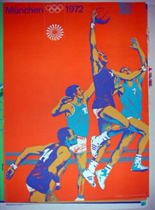

Tehnologija i nostalgija
ãetrtek, 4. januar 2007. u 10:38 AM
Piše: La Lara
Rubrike: Internet | Outdoors/Sport | Umetnost/Arts
Jednog od ovih dana čitam tekst u prazničnom dvobroju Vremena o fenomenu You Tuba i o tome šta se iz prošlosti SFRJ i sadašnjosti Srbije može tamo naći. Poenta je da ima svačega, od Tita, starih utakmica, delova TV dnevnika, muzike, aktuelne estrade, političara itd.
U delu o utakmicama za pamćenje piše:
"Taj sentimentalni prtljag dragocen je naročito za one koji više nisu ovde jer se, baš kao i ljudi, rasuo na mnogo strana. Zato je i njihova zahvalnost za svaki dobijeni komad zajedničkih uspomena velika. To se vidi po komentarima na postavljanje snimaka Dražena Petrovića i zlatne generacije koja nikada nije zaigrala protiv Amera, Mirze Delibašića koji vodi "Bosnu" do prve titule prvaka Evrope protiv "Emersona" 1978, golova Pape Sušića Rumunima u onih legendarnih 6:4 u Bukureštu... Tuga još izbija iz snimaka poraza Jugoslavije od Argentine u četvrtfinalu Svetskog prvenstva 1990, "Željinog" gubitničkog 2:1 protiv "Videotona" u polufinalu kupa UEFA 1985, Zvezdinog poraza od 1:0 protiv Borusije 1978. u finalu tog istog kupa. Među komentatorima, vrh drže Mladen Delić sa "Je li to moguće, ljudi moji!!!" i ništa manje legendarni Milojko Pantić sa prodornim krikom kojim je proslavio ulazak Zvezde u finale Kupa šampiona: "Nebo se otvorilooo, stadion je eksplodiraooo!!!" Na Jutjubu je fascinantno i to što zahvatanje u prošlost ide zaista daleko, sve do gotovo zaboravljenih asova – Vukas trese mrežu Belgije 1958. i Austrije 1952.."
Lepo. Ono što u celom tom zanimljivom tekstu nedostaje, a što bih volela da pročitam, jeste ko su ti ljudi koji od nekle izvlače te snimke, iz jednog formata i tehnologije ih prebacuju u drugi, i kače na You Tube. Bravo, u svakom slučaju.
I šta onda. Sutradan čitam knjigu Milenka Jergovića 'Buick Rivera' i na strani 21 nađem ovaj deo:
"Sjeo je pred televizor, zapalio cigaretu i gledao u prazni ekran. Jedino zbog čega bi ga uključio i što je stvarno želio gledati bila bi neka stara utakmica, olimpijsko finale u košarci, kojem zna rezultat, ali se to ne emitira niti na jednom programu. Recimu, Munchen 1972. kada su rusi u posljednjoj sekundi pobijedili Ameriku, a naši ljudi nisu znali bi li se tome radovali ili bi psovali. Pobijedili su slabiji, od čega čovjeku vazda zaigra srce jer je na njihovoj strani, kao što navijaš i za pljačkaša banke kojeg na filmu ganja policija, ali pobijedili su Rusi, a tko bi se normalan tih godina u nas radovao ruskim pobjedama. ne, to nije imalo veze s politikom. Ali kako ćeš navijati za ljude koji se nikada ne nasmiju, nikad se ne ljute na suce i imaju najružnije dresove na olimpijadi. A sad mu se baš gledala ta utakmica. Naprosto da provjeri što se s njime promijenilo u posljednjih trideset godina ili što se promijenilo s tom utakmicom."
I tako je bilo sve dok video snimci nisu došli na internet. I dok entuzijasti nisu rešili da ih učine dostupnim i drugima. OK, ja sam probala da nađem ovu utakmicu, nisam uspela, ali postoje bar drugi video snimci na You Tubu vezani za Olimpijske igre u Minhenu 1972.
Fascinantno, zar ne?
 RSS feed
RSS feed
 sadržaji se objavljuju pod
sadržaji se objavljuju pod
Komentari
Zbog tehničkih problema komentari stigli do početka jula 2007. su sada u okviru teksta
Yahti | 07.08.07 09:23